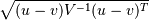

scipy.spatial.distance.mahalanobis¶
- scipy.spatial.distance.mahalanobis(u, v, VI)[source]¶
Computes the Mahalanobis distance between two 1-D arrays.
The Mahalanobis distance between 1-D arrays u and v, is defined as

where V is the covariance matrix. Note that the argument VI is the inverse of V.
Parameters : u : (N,) array_like
Input array.
v : (N,) array_like
Input array.
VI : ndarray
The inverse of the covariance matrix.
Returns : mahalanobis : double
The Mahalanobis distance between vectors u and v.